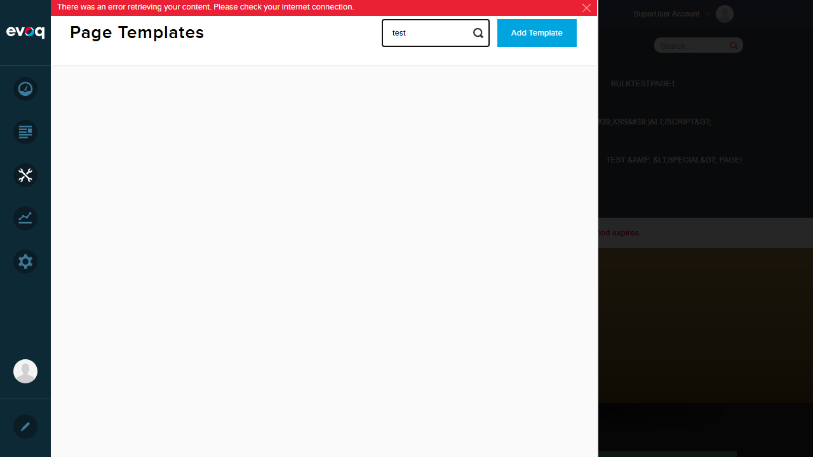
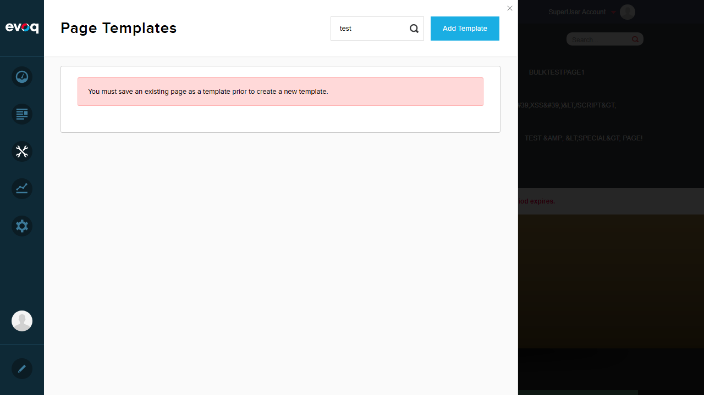
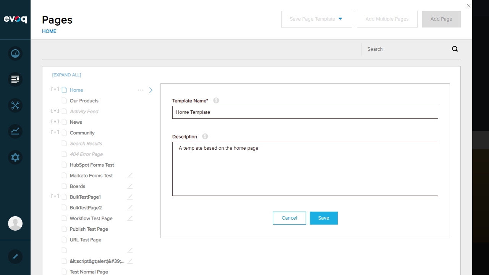

Template Search - Test Report
Feature Information
| Feature Name |
Template Search |
| Description |
Search templates by name or localized name using keyword search |
| Extension |
Evoq.PersonaBar.Templates |
| Priority |
High |
| UI Location |
Admin > Manage > Templates > Search box |
| Relevant Files |
Services/TemplatesController.cs
admin/personaBar/Templates.html
admin/personaBar/scripts/templatesHierarchy.js
|
| Test Date |
January 6, 2026 |
| Tester |
Automated Test (Claude) |
Test Summary
| Test Scenario |
Status |
Reason |
| Search by template name |
FAIL |
Backend API returns 500 Internal Server Error |
| Search by partial name |
FAIL |
Backend API returns 500 Internal Server Error |
| Search with no results |
FAIL |
Backend API returns 500 Internal Server Error |
| Clear search to show all templates |
FAIL |
Backend API returns 500 Internal Server Error |
| Search is case-insensitive |
FAIL |
Backend API returns 500 Internal Server Error |
| Real-time search as user types |
FAIL |
Backend API returns 500 Internal Server Error |
Test Details
Test 1: Search by Template Name
FAIL
Steps Taken:
- Logged in as SuperUser (host)
- Navigated to Manage > Templates
- Attempted to view templates list
- Typed "test" in the search box
Expected Result:
Templates matching the search term should be displayed
Actual Result:
The GetPageTemplates API returns HTTP 500 Internal Server Error. No templates are displayed. Error message: "There was an error retrieving your content. Please check your internet connection."
Issues Found:
- API endpoint
/API/personaBar/Templates/GetPageTemplates returns 500 error
- Search functionality cannot be tested due to backend failure

Templates page showing server error when loading

Search attempt showing "test" typed but server error persists
Test 2: Search by Partial Name
FAIL
Expected Result:
Partial name search should match templates containing the search term
Actual Result:
Cannot test - GetPageTemplates API consistently returns 500 error
Test 3: Search with No Results
FAIL
Expected Result:
Searching for non-existent template should show empty result or "no results" message
Actual Result:
Cannot test - GetPageTemplates API consistently returns 500 error
Test 4: Clear Search to Show All Templates
FAIL
Expected Result:
Clearing the search box should show all available templates
Actual Result:
Cannot test - GetPageTemplates API consistently returns 500 error. Additionally, clicking "Add Template" shows message: "You must save an existing page as a template prior to create a new template" indicating no templates exist in the system.

Message indicating no templates exist in the system
Test 5: Search is Case-Insensitive
FAIL
Code Analysis:
Based on code review, the search should be case-insensitive. In TemplatesController.cs line 319-320:
where string.IsNullOrEmpty(searchKey) ||
(t.TabName.IndexOf(searchKey, StringComparison.InvariantCultureIgnoreCase) > Null.NullInteger
|| t.LocalizedTabName.IndexOf(searchKey, StringComparison.InvariantCultureIgnoreCase) > Null.NullInteger)
Actual Result:
Cannot verify through UI testing - GetPageTemplates API consistently returns 500 error
Test 6: Real-time Search as User Types
FAIL
Code Analysis:
Based on code review in templatesHierarchy.js, the search implements debounce with 500ms delay:
_searchKeywordsChangedHandler: function (e) {
if (this._doSearchTimeoutHandler) {
clearTimeout(this._doSearchTimeoutHandler);
}
this._doSearchTimeoutHandler = setTimeout(function () {
handler._searchPage();
}, this.options.delayTime); // delayTime: 500
}
Expected Result:
Search should filter templates in real-time with 500ms debounce as user types
Actual Result:
Typing in search box triggers API calls, but all calls return 500 error. Real-time functionality cannot be verified.
Additional Testing Attempt
Attempt to Create Template
FAIL
Steps Taken:
- Navigated to Content > Pages
- Selected Home page
- Clicked "Save Page Template" dropdown
- Selected "Evoq Page Template"
- Entered template name: "Home Template"
- Entered description: "A template based on the home page"
- Clicked Save
Actual Result:
Save operation failed with HTTP 400 Bad Request error. Template was not created.

Attempting to save page as template
Observations
- UI Elements Present: The Templates page UI loads correctly with the search box, "Add Template" button, and page list panel.
- Backend Issue: The
GetPageTemplates API endpoint consistently returns HTTP 500 Internal Server Error, preventing any template listing or search functionality.
- No Existing Templates: The system has no existing page templates. Clicking "Add Template" displays: "You must save an existing page as a template prior to create a new template."
- Template Creation Blocked: Attempting to save a page as template via Pages panel fails with HTTP 400 Bad Request.
- Code Analysis Confirms Design: Review of source code confirms:
- Search is designed to be case-insensitive using
StringComparison.InvariantCultureIgnoreCase
- Search filters by both
TabName and LocalizedTabName
- Real-time search is implemented with 500ms debounce
- Search is performed client-side by calling
_loadPageTemplates() which calls the API
- Recommendation: Backend configuration or database setup issue needs to be resolved before Template Search feature can be tested. The API endpoints for Templates functionality are not working properly on this test environment.
Environment Information
| Website URL |
http://localhost:8081 |
| Test Account |
SuperUser (host) |
| Browser |
Playwright MCP (Chromium) |
| Viewport |
1280x720 |

Login successful - Setup screenshot